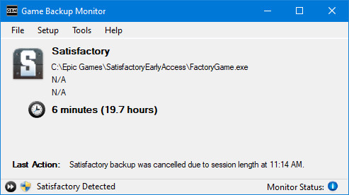
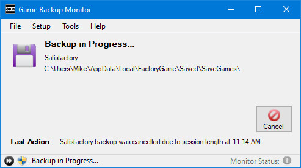
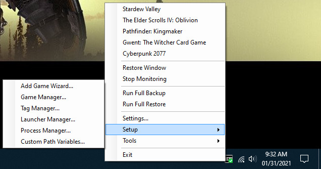
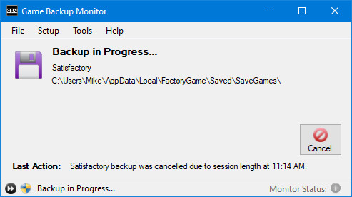
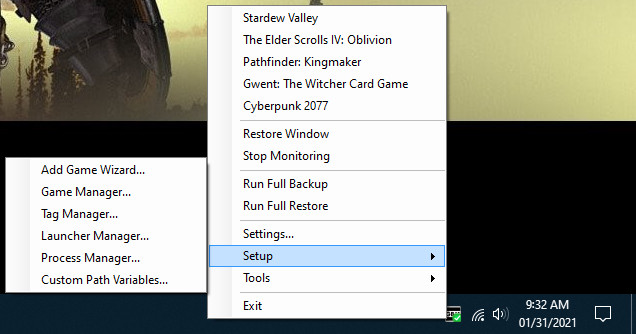

Screenshots





A game being detected.

A backup running when the game ended.
Session & total time are updated when the backup ends.
The Game Manager, an all-in-one management screen.

All functions are available from the system tray.
Add Game Wizard eases configuration for novice users.